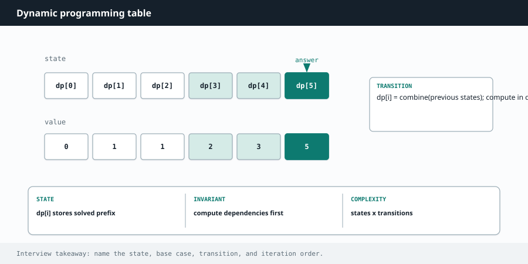

Competitive Programming
Chapter 13
Dynamic programming

Dynamic programming, or DP, sounds scary but it is one idea: break a problem into smaller versions of itself, and never solve the same small version twice. You solve each subproblem once, write down the answer, and reuse it. That is the whole trick.
How to know it is a DP problem
Two signals together mean DP. First, the problem asks for a best value ("minimum cost", "maximum profit", "longest", "number of ways"). Second, the answer to the whole problem can be built from answers to smaller pieces, and those pieces overlap so you keep recomputing them. When you see "how many ways" or "min / max" and a natural notion of a smaller subproblem, think DP. grid paths: each cell = paths from above + paths from the left
| 1 | 1 | 1 | 1 |
|---|---|---|---|
| 1 | 2 | 3 | 4 |
| 1 | 3 | 6 | 10 |
Fill the table so that when you compute a cell, the cells it depends on are already done.
Two ways to write DP
Top down (memoization). Write the natural recursion, then cache each answer in a map or array so repeated calls are instant. Easiest to think about because it mirrors the problem directly.
Bottom up (tabulation). Fill a table starting from the smallest subproblems and building up to the answer. Usually a bit faster and avoids deep recursion, but you have to figure out the fill order.
T H E F O U R Q U E S T I O N S T H A T C R A C K A N Y D P
1. What is the state? (What does one subproblem look like, and what index or indices describe it?) 2. What is the recurrence? (How do you build this state from smaller states?) 3.
What are the base cases? (The smallest states you know directly.) 4. What is the answer? (Which state holds the final result?) Answer these four and the code writes itself.
Worked example: climbing stairs (the "hello world" of DP)
You can climb 1 or 2 steps at a time. How many ways to reach step n? To reach step n, your last move was either from step n-1 or from step n-2, so the ways to reach n equal the ways to reach n-1 plus the ways to reach n-2. That is the Fibonacci sequence.
def climb_stairs(n):
if n <= 2:
return n
# only the last two results matter, so keep just those
one_back, two_back = 2, 1
for _ in range(3, n + 1):
current = one_back + two_back
two_back = one_back
one_back = current
return one_back
int climbStairs(int n) {
if (n <= 2) return n;
int oneBack = 2, twoBack = 1; // ways to reach n-1 and n-2
for (int i = 3; i <= n; i++) {
int current = oneBack + twoBack;
twoBack = oneBack;
oneBack = current;
}
return oneBack;
}
R O L L I N G V A R I A B L E S S A V E M E M O R Y
When each state only depends on the previous one or two, you do not need a whole array.
Keep just the last couple of values in variables and slide them forward. Climbing stairs drops from O(n) space to O(1) space this way. Many 1D DP problems allow the same trick.
Worked example: coin change (minimum coins)
Given coin denominations and an amount, find the fewest coins that make that amount. The state is "fewest coins to make amount a." To make amount a, try each coin: use it, then you still need to make a minus that coin's value, which is a smaller subproblem you already solved. Take the best over all coins.
def coin_change(coins, amount):
INF = amount + 1
dp = [0] + [INF] * amount # dp[a] = fewest coins to make a
for a in range(1, amount + 1):
for coin in coins:
if coin <= a:
dp[a] = min(dp[a], dp[a - coin] + 1)
return dp[amount] if dp[amount] != INF else -1
int coinChange(int[] coins, int amount) {
int INF = amount + 1;
int[] dp = new int[amount + 1];
Arrays.fill(dp, INF);
dp[0] = 0; // zero coins make amount 0
for (int a = 1; a <= amount; a++) {
for (int coin : coins) {
if (coin <= a) dp[a] = Math.min(dp[a], dp[a - coin] + 1);
}
}
return dp[amount] == INF ? -1 : dp[amount];
}
Worked example: longest common subsequence (2D DP)
Given two strings, find the length of the longest sequence of characters that appears in both, in order but not necessarily together. The state is a pair: how far you are into each string. If the current characters match, they extend the best answer from one step back in both strings. If not, you take the better of skipping a character from either string. This grid-filling shape appears in edit distance, string matching, and many more.
def longest_common_subseq(a, b):
m, n = len(a), len(b)
dp = [[0] * (n + 1) for _ in range(m + 1)]
for i in range(1, m + 1):
for j in range(1, n + 1):
if a[i - 1] == b[j - 1]:
dp[i][j] = dp[i - 1][j - 1] + 1 # characters match
else:
dp[i][j] = max(dp[i - 1][j], dp[i][j - 1]) # skip one
return dp[m][n]
int longestCommonSubseq(String a, String b) {
int m = a.length(), n = b.length();
int[][] dp = new int[m + 1][n + 1];
for (int i = 1; i <= m; i++) {
for (int j = 1; j <= n; j++) {
if (a.charAt(i - 1) == b.charAt(j - 1)) {
dp[i][j] = dp[i - 1][j - 1] + 1; // match
} else {
dp[i][j] = Math.max(dp[i - 1][j], dp[i][j - 1]);
}
}
}
return dp[m][n];
}
W A T C H O U T
Get the base cases right or everything downstream is wrong; an off-by-one in the table size or the starting values is the usual culprit. Make sure you fill the table in an order where every cell's dependencies are already computed. And do not force tabulation if the recursion is clearer to you; a memoized top-down solution earns full marks and is often easier to get correct under pressure.
Deeper Intuition
Why memoizing turns exponential into linear
Dynamic programming applies when a plain recursion solves the same smaller problem over and over. The recursion tree for something like Fibonacci is full of repeated calls, so its cost blows up exponentially. If you remember each subproblem's answer the first time you compute it, every later call is a free lookup, and the work collapses to the number of distinct subproblems. That is the whole idea, whether you write it top down with a cache or bottom up as a table. f3 and f2 are computed again and again, so cache each once f5 f4 f3 f3 f2 f2 f1 A naive recursion recomputes the same subproblems (the orange nodes).
Memoizing each result once removes the waste.
Another worked example: House Robber
You cannot rob two adjacent houses. The best you can do at each house is either skip it, keeping the previous best, or rob it and add its money to the best from two houses back. Track just those two rolling values, so it runs in O(n) time and O(1) space.
def rob(nums):
prev, curr = 0, 0 # best up to the last two houses
for money in nums:
prev, curr = curr, max(curr, prev + money) # skip vs rob this house
return curr
int rob(int[] nums) {
int prev = 0, curr = 0;
for (int money : nums) {
int take = prev + money; // rob this house
prev = curr;
curr = Math.max(curr, take); // skip vs rob
}
return curr;
}
Going Deeper
What kinds of problems this solves
U S E T H I S P A T T E R N F O R
Problems asking for a count of ways, or a best possible value, where the same smaller problems keep reappearing. If a brute force recursion solves the same subproblem over and over, dynamic programming remembers each answer once.
| Problem type | Classic examples |
|---|---|
| One dimensional sequence | Climbing Stairs, House Robber, House Robber II, Decode Ways, Maximum Subarray, Word Break |
| Knapsack and coins | Coin Change, Coin Change II, Partition Equal Subset Sum, Target Sum |
| Grid paths | Unique Paths, Minimum Path Sum, Maximal Square, Dungeon Game |
| Two sequences and strings | Longest Common Subsequence, Edit Distance, Longest Palindromic Substring, Distinct Subsequences |
| Choice over positions | Longest Increasing Subsequence, Best Time to Buy and Sell Stock with Cooldown, Burst Balloons |
The algorithm, in a bit more detail
Every DP is four questions. What is the state, meaning the smallest set of facts that describe a subproblem. What is the recurrence, meaning how a state is built from smaller states. What are the base cases, the smallest states you can fill directly. And what order fills the table so every state is ready before you need it.
You can write it top down as memoized recursion, where you solve naturally and cache each answer, or bottom up as a table you fill in order. They compute the same thing. Top down is often easier to reason about, bottom up is often faster and lets you shrink memory by keeping only the last row or two.
Variations you will run into
The families to recognize are linear DP over one sequence, knapsack style choices of take or skip, grid DP over a 2D board, and two sequence DP for string alignment like edit distance. Many one dimensional DPs can drop to O(1) extra space by keeping just the previous couple of values.
Edge cases and gotchas
Define the state precisely, since a vague state is the number one reason a DP is wrong.
Get the base cases right, they anchor everything built on top of them.
Fill the table in an order where every value you read is already computed.
Watch array sizes and off by one, especially when the state runs from zero to n inclusive.
S T E P B Y S T E P
Climbing stairs for 5 steps, where you can take 1 or 2 at a time. The ways to reach a step are the ways to reach the two steps below it, so we build a small table.
| step n | ways to reach it | how |
|---|---|---|
| 1 | 1 | base case |
| 2 | 2 | base case |
| 3 | 3 | ways(2) + ways(1) = 2 + 1 |
| 4 | 5 | ways(3) + ways(2) = 3 + 2 |
| 5 | 8 | ways(4) + ways(3) = 5 + 3 |
Interview drill — DP
State → transition → base case — say them before the loop.
More drills in the Interview Lab.
Q1. Coin Change
Q2. House Robber
Max money, no adjacent houses.
dp[i]=max(dp[i−1], dp[i−2]+nums[i]). Roll two variables for O(1) space.
Q3. Longest Increasing Subsequence
LIS length.
O(n²) DP fine to start; O(n log n) tails + binary search — mention both.
Q4. Word Break
Can s be segmented into dictionary words?
dp[i] true if some dp[j] and s[j:i] in dict. Cap inner loop by max word length.
Q5. Unique Paths
Right/down paths on m×n grid.
dp[r][c]=dp[r−1][c]+dp[r][c−1], or C(m+n−2, m−1).